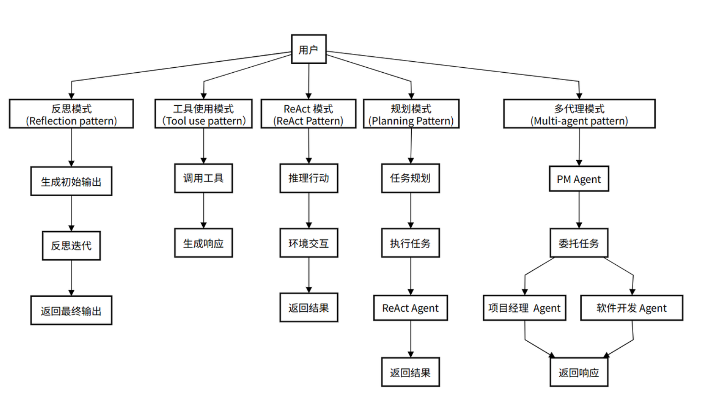
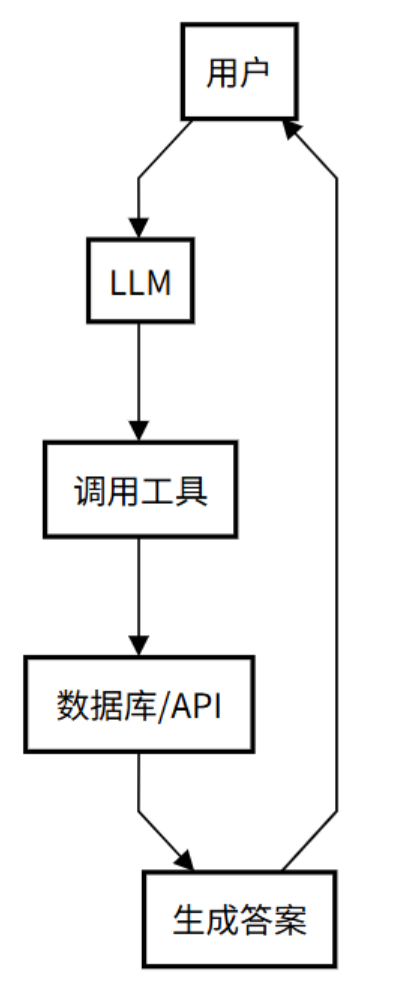
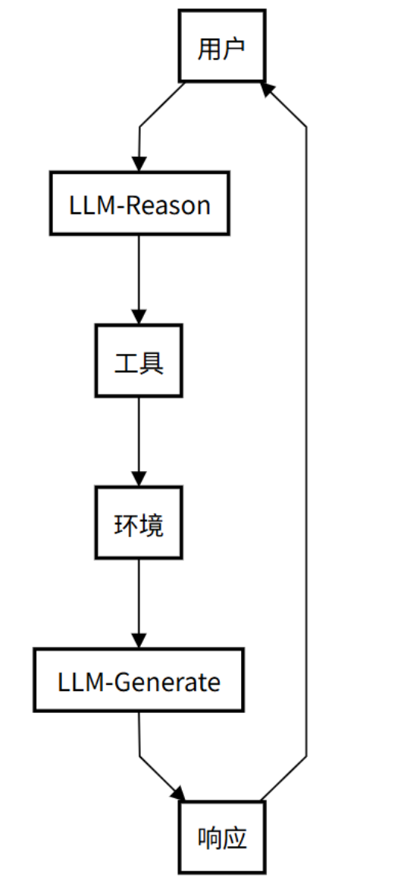
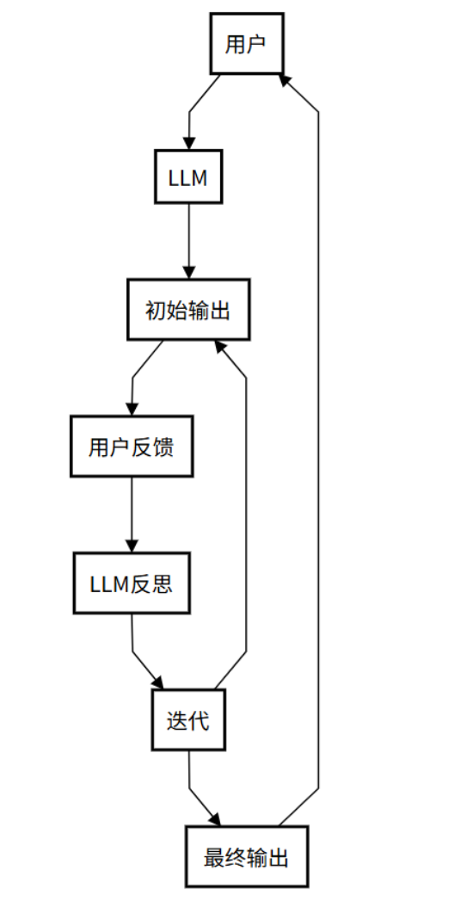
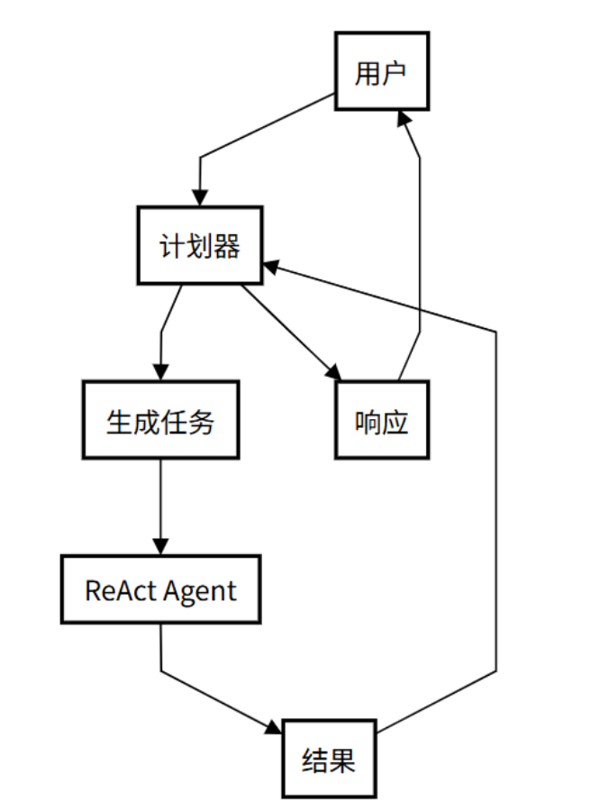
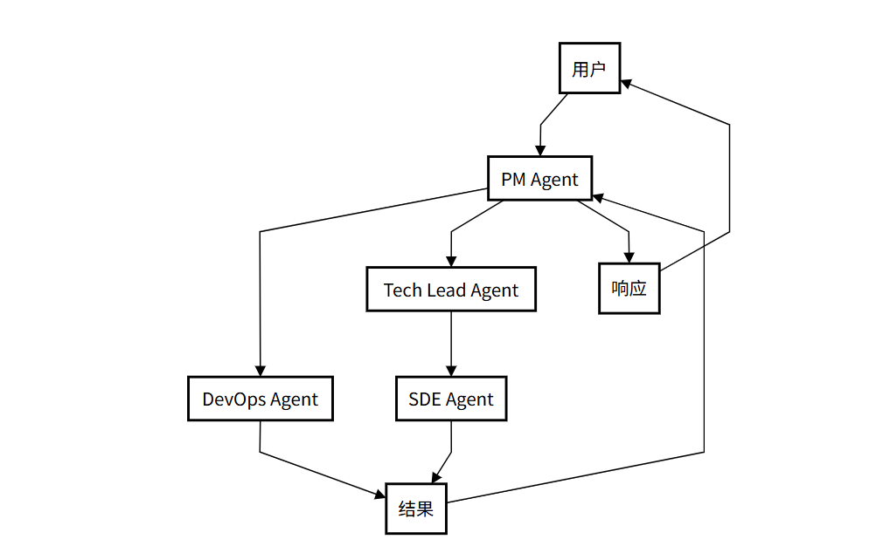

🤖 Agent、ReAct 与五种智能体模式
工程实践提示：示例中的模型地址、数据库账号和密钥均应通过环境变量或独立配置文件注入；部署前还需补充权限控制、输入校验、超时重试、日志脱敏、来源引用与离线评估。
学习目标
- 理解什么是agent
- 理解什么是agentic
- 知道agent的五种模式
1 什么是 Agent
一个 Agent，简单来说，就是一个能够**感知环境、做出决策并采取行动来完成特定目标**的“智能体”。
最基础的LLM（大型语言模型），比如deepseek、ChatGPT，在回答问题时其实就已经是一个基础的Agent。它感知你的问题（环境），做出回答的决策，并生成文本（行动）。但一个真正的Agent远不止于此。它需要更强的“能动性”，能够自主地进行反思、规划，甚至与其他Agent协作。这正是将基础LLM升级为高级Agent的关键。
2 什么是Agentic
Agentic 是一个形容词，它描述的是一个系统所表现出的“ 像 Agent 一样的程度 ”。 一个系统越是 Agentic，它就越表现出自主性、目标导向性和主动性。它不是一个具体的实体，而是一种行为模式或设计思想。
- 低 Agentic 系统：一个简单的聊天机器人，只能根据预设规则回答问题。
- 高 Agentic 系统：一个能自动调试代码、部署应用并监控其运行状态的 AI 软件工程师。
正如OpenAI的AI主管 Lilian Weng（翁丽莲） 在她那篇关于 自主智能体（Autonomous Agents） 的里程碑式博客文章《LLM Powered Autonomous Agents》中所强调的，具备智能体特性agentic的 AI，不会傻傻地等待下一步指令，而是会主动进行思考，
- 发现自己犯了错，然后自己去修正。
- 意识到需要外部信息，然后主动去调用工具。
- 面对复杂任务时，自己去拆解成小步骤。
所以，智能体是载体，而它拥有的、让它变得强大的核心能力，正是这篇文章系统阐述的，规划、记忆和工具使用等关键组件 。文章《LLM Powered Autonomous Agents》是智能体系统领域的里程碑之作，其价值在于系统化梳理了智能体的核心概念，提出ReAct 等模式，奠定了理论框架；通过案例和细节为工程实践提供了指导 ；推动了从被动响应到主动解决问题的 AI 范式转变；并以通俗语言连接了学术与工业，促进了技术普及，影响了智能体系统的研究与应用。”
Agentic 特性并非凭空出现，它通过多种具体的工作模式来实现。下面我们将深入探索五种最常见的Agentic模式，它们定义了Agent在不同场景下的“工作风格”。值得一提的是，这些模式的演化路径与 ReAct 思想有着紧密的联系，后者被视为开启了Agentic系统设计的大门。

3 Agent五种模式
3.1 ⼯具使⽤模式（Tool use pattern）
核心精髓： 工具使用模式可以看作是 ReAct 模式的前身或简化版。它允许 Agent 调用外部工具来弥补自身知识的不足，但通常缺乏 ReAct 模式中那种细致入微的“思考-行动-观察”循环。它的局限在于其推理能力较弱，通常只适用于单步、直接的任务，缺乏动态调整和迭代的能力。
工作流程（像请教专家）：
- 用户问问题：提出一个问题。
- LLM 想想：小助手判断需要外援。
- 调用工具：它找来数据库或 API 查资料。
- 给出答案：根据查到的东西，生成回复。
- 交给你：答案回到你手里。
应用场景示例：
智能客服：一个客服 Agent 接到“查询我的订单状态”的请求。它不会胡乱猜测，而是思考需要查询订单信息，然后行动调用 query_order_status(order_id) 这个工具（API），最后根据返回的结果回答用户。

3.2 ReAct 模式 (ReAct Pattern)
几乎所有高级的 Agent 模式都离不开一个核心思想——ReAct (Reason + Act)。这是 Agent 实现“思考”与“行动”循环的基础。
核心精髓： ReAct（Reasoning and Acting）模式是Agentic思想的 奠基性贡献 。它将“思考”（Reasoning）和 “行动”（Acting）紧密地结合在一起，形成一个动态的循环。这个模式让Agent不再是简单地调用工具，而是像人类一样“边想边做”。 ReAct 模式最早由 Yao 等人于 2022 年提出（论文《ReAct: Synergizing Reasoning and Acting in Language Models》），并在 Lilian Weng 的博客中得到系统阐述，成为Agentic系统设计的基础。
工作流程：
- 思考： Agent接收用户请求，推理任务需求并制定初步行动计划。
- 行动： 根据思考结果，决定并执行具体行动（如调用工具）。
- 行动输入： 为选定的工具提供必要参数。
- 观察： 接收工具执行结果，作为对环境的“观察”。
- 循环迭代： 将观察结果反馈给自己，再次思考并决定下一步，直到达到目标。
应用场景示例：
- 研究助理agent：任务是“查找关于‘大型语言模型在教育领域的应用’的最新研究论文”。
- Thought: 我需要去学术搜索引擎搜索相关论文。
- Action:
search_arxiv("large language models in education") - Observation: （返回了10篇论文的标题和摘要）
- Thought: 结果太多了，我需要筛选出最近一年且被引用次数最多的论文。
- Action:
filter_papers(results, min_year=2023, sort_by="citations") - Observation: （返回了3篇最相关的论文）
- Thought: 我已经找到了最相关的论文，现在可以总结并回答用户了。

3.3 反思模式（Reflection pattern）
为了提高任务完成的质量，Agent 在完成一个步骤或整个任务后，会进行 自我评估和反思 ，并根据反思结果进行修正。
核心精髓： 反思模式是 ReAct 模式中“思考”环节的深化。它强调 Agent 在完成任务后，能够像人类一样进行自我审查和评估。这个过程让 Agent 能够从错误中学习，持续优化自己的表现。
工作流程：
- 用户问问题：你给小助手提个问题。
- LLM 给出初稿：小助手先试着回答，写个初步答案。
- 用户反馈：用户查看答案行不行，提出意见。
- LLM 自己反思：小助手想想哪里不对，改改答案。
- 反复调整：可能来回改几次，直到你满意。
- 交给你：最终答案交到你手里。
应用场景示例：
- AI 代码生成器：任务是“写一个 Python 函数来计算斐波那契数列”。
- Action: Agent 快速生成了一个使用递归实现的函数。
- Reflection (Self-Critique): Agent 开始反思生成的代码。“这个递归实现在计算较大数值时，会因为重复计算而导致性能低下。我应该优化它。”
- Action (Refinement): Agent 重新编写代码，使用了带缓存（memoization）的动态规划方法，大大提高了效率，然后将优化后的代码作为最终答案。

3.4 规划模式（Planning Pattern）
当任务非常复杂，无法通过简单的 ReAct 循环一步到位时，Agent 需要先进行 宏观规划 。
核心思想：先将一个大目标分解成一个详细的、有序的计划（Plan），然后再逐一执行计划中的每个步骤（每个步骤可能是一个 ReAct 循环）。
应用场景示例：
- AI 旅行规划师：任务是“帮我规划一个为期五天的巴黎家庭亲子游”。
- Planning Phase: Agent 首先生成一个计划：
步骤一：确定旅行日期和预算。步骤二：根据亲子游的特点，搜索并筛选合适的景点（如迪士尼、卢浮宫儿童区）。步骤三：规划每日行程，确保节奏轻松，并预订门票。步骤四：搜索并推荐适合家庭入住的酒店和餐厅。步骤五：汇总所有信息，生成一份详细的旅行计划文档。
- Execution Phase: Agent 开始按顺序执行上述步骤，每一步都可能调用搜索、预订等工具。
- Planning Phase: Agent 首先生成一个计划：

3.5 多智能体模式 (Multi-agent Pattern)
对于极其复杂的系统性任务，单个 Agent 可能难以胜任。这时，可以设计多个具有不同角色和能力的 Agent，让它们协同工作。
核心精髓： 多智能体模式是Agentic思想的 终极体现 ，它模拟了人类团队协作的工作方式。它不再依赖一个Agent单打独斗，而是创建多个具有不同专长的Agent，让它们各司其职、相互协作，共同完成一个复杂的任务。尽管多智能体模式功能强大，但实现时需要解决Agent间的通信效率、任务冲突等问题，这对系统设计提出了更高要求。
应用场景示例：
-
软件开发过程：
- 用户问问题：用户提个大需求（比如开发一个软件项目）。
- PM Agent：项目经理 Agent 分析需求并分配任务（协调整个团队）。
- 委托任务：任务交给 DevOps 和 Tech Lead（DevOps 负责运维，Tech Lead 负责技术领导）。
- 执行任务：DevOps（处理部署和测试） 和 SDE（编写代码）干活（具体实施任务）。
- 结果汇总：大家干完后，把结果汇报给 PM Agent（统一收集反馈）。
- 交给你：PM Agent 整合所有结果，给用户最终答案（交付完成的项目）。
这个流程通过多个智能体协作，模拟真实团队工作，确保复杂任务高效完成。

3.6 Agent 模式的演进关系
上述5种模式构成了一个从简单到复杂的演进阶梯：
Tool Use (基础) -> ReAct (核心循环) -> Planning (宏观规划) -> Reflection (质量保证) -> Multi-Agent (规模化协作)
- ReAct 是 Tool Use 的规范化和显式化，让工具使用变得有迹可循。
- Planning 是在执行多个 ReAct 循环之前的高层战略制定。
- Reflection 是对 ReAct 或 Planning 执行结果的检查与优化。
- Multi-Agent 是将多个可能使用上述所有模式的 Agent 组织起来，形成一个系统。
通过上述的agent模式的演进过程，它清晰地指明了“如何一步步构建一个更强大的 Agent”。
TIPS:
一个真正强大的 Agent 系统，并不会只使用其中一种模式。它会根据任务的复杂性，灵活地将这些模式组合起来。例如，一个 Agent 面对一个复杂问题时，可能会先启动 规划模式 来分解任务，然后将子任务交给一个使用 ReAct 模式 的执行者，而这个执行者在执行过程中又会调用各种 工具 ，并在遇到困难时启动 反思模式 来修正自己的策略。
这种组合和嵌套的能力，正是 Agentic 系统能够处理现实世界中各种复杂任务的关键。
4 代码实战
4.1 工具使用模式
位置：agent_learn/agent_types/C01_ToolUsePattern.py
from langchain_core.prompts import ChatPromptTemplate from langchain_openai import ChatOpenAI from langchain_core.tools import tool from langchain.agents import AgentExecutor, create_tool_calling_agent, create_react_agent from agent_learn.config import Config conf = Config() # 1.创建模型 llm = ChatOpenAI(base_url=conf.base_url, api_key=conf.api_key, model=conf.model_name, temperature=0.1) # 2.定义工具 @tool def multiply(a: int, b: int) -> int: """用于计算两个整数的乘积。""" print(f"正在执行乘法: {a} * {b}") return a * b @tool def search_weather(city: str) -> str: """用于查询指定城市的实时天气。""" print(f"正在查询天气: {city}") if "北京" in city: return "北京今天是晴天，气温25摄氏度。" elif "上海" in city: return "上海今天是阴天，有小雨，气温22摄氏度。" else: return f"抱歉，我没有'{city}'的天气信息。" # 将工具列表放入一个变量 tools = [multiply, search_weather] # 3.定义一个提示模板，用于控制Agent的思考过程和工具调用 tool_use_prompt = ChatPromptTemplate.from_messages([ ("system", "你是一个强大的AI助手，可以访问和使用各种工具来回答问题。请根据用户的问题，决定是否需要调用工具。当需要调用工具时，请使用正确的JSON格式。"), ("user", "{input}"), ("placeholder", "{agent_scratchpad}") # 这个占位符用于保存 Agent 的思考过程和工具调用历史 ]) # 4.创建一个 LLM 能够识别和使用的 Agent # 使用 create_tool_calling_agent 函数，它能让 LLM 自动判断何时以及如何调用工具 tool_calling_agent = create_tool_calling_agent(llm, tools, tool_use_prompt) # 5.创建 Agent Executor # AgentExecutor 负责 Agent 和工具之间的协调 tool_use_executor = AgentExecutor( agent=tool_calling_agent, tools=tools, verbose=True # 开启 verbose 模式，可以打印详细的执行过程 ) # 6.通用的执行函数，用于运行agent并打印结果 def run_agent_and_print(agent_executor, query): """一个通用函数，用于运行Agent并打印结果。""" print(f"--- 运行Agent，查询: {query} ---") response = agent_executor.invoke({"input": query}) print(f"\n--- Agent响应: ---") print(response.get("output", "没有找到输出。")) print("-" * 30 + "\n") if __name__ == "__main__": run_agent_and_print(tool_use_executor, "上海今天的天气怎么样？") run_agent_and_print(tool_use_executor, "30乘以5等于多少？ 上海天气怎么样")
4.2 ReAct模式
位置：agent_learn/agent_types/C02_ReActPattern.py
from langchain_openai import ChatOpenAI from langchain_core.tools import tool from langchain_core.prompts import ChatPromptTemplate from langchain.agents import AgentExecutor, create_react_agent from agent_learn.config import Config conf = Config() # 1.创建模型 llm = ChatOpenAI(base_url=conf.base_url, api_key=conf.api_key, model=conf.model_name, temperature=0.1) # 2.定义工具 # 关键修改：重写 multiply 工具，使其只接受一个字符串参数，并在内部解析。 @tool def multiply(numbers_str: str) -> int: """用于计算两个整数的乘积。 参数: numbers_str (str): 包含两个整数的字符串，用逗号分隔，例如："100,25"。 返回: int: 两个整数的乘积。 """ print(f"正在执行乘法: {numbers_str}") try: a_str, b_str = numbers_str.split(',') a = int(a_str.strip()) b = int(b_str.strip()) return a * b except ValueError: return "输入的格式不正确，请确保是两个用逗号分隔的整数，例如：'100,25'" @tool def search_weather(city: str) -> str: """用于查询指定城市的实时天气。""" print(f"正在查询天气: {city}") if "北京" in city: return "北京今天是晴天，气温25摄氏度。" elif "上海" in city: return "上海今天是阴天，有小雨，气温22摄氏度。" else: return f"抱歉，我没有'{city}'的天气信息。" # 将工具列表放入一个变量 tools = [multiply, search_weather] # 3.自定义 ReAct 风格的 Prompt react_prompt_template = """你是一个有用的 AI 助手，可以访问以下工具： {tools} 请根据用户输入一步步推理，并按以下规则操作： 1. 每次输出只能包含一个动作（Action 和 Action Input）或一个最终答案（Final Answer）。 2. 如果用户输入包含多个任务，依次处理每个任务，不要一次性输出所有步骤。 3. 每次行动前，说明你的思考（Thought），并选择合适的工具或直接给出最终答案。 4. 如果需要使用工具，格式必须为： Thought: [你的思考] Action: [工具名称] Action Input: [工具的输入参数，例如对于multiply工具，使用'100,25'格式] 5. 如果可以直接回答或所有任务都完成，格式为： Thought: [你的思考] Final Answer: [最终答案] 可用的工具名称有: {tool_names} 用户输入: {input} {agent_scratchpad} """ react_prompt = ChatPromptTemplate.from_template(react_prompt_template) # 4.创建 ReAct 风格的 Agent react_agent = create_react_agent(llm, tools, react_prompt) # 5.创建 Agent Executor react_executor = AgentExecutor( agent=react_agent, tools=tools, verbose=True, handle_parsing_errors=True # 启用错误处理，自动重试解析错误 ) # 6: 运行并测试 Agent if __name__ == "__main__": # 测试用例1: 查询天气 print("--- 运行Agent，查询: 上海今天的天气怎么样？ ---") response_weather = react_executor.invoke({"input": "上海今天的天气怎么样？"}) print(f"\n--- Agent响应: ---") print(response_weather.get("output", "没有找到输出。")) print("-" * 30 + "\n") # 测试用例2: 数学计算 print("--- 运行Agent，查询: 100乘以25等于多少？ ---") response_math = react_executor.invoke({"input": "100乘以25等于多少？"}) print(f"\n--- Agent响应: ---") print(response_math.get("output", "没有找到输出。")) print("-" * 30 + "\n") # 测试用例3: 包含多个任务 print("--- 运行Agent，查询: 100乘以25等于多少？ 上海的天气如何？ ---") response_multi = react_executor.invoke({"input": "100乘以25等于多少？ 上海的天气如何？"}) print(f"\n--- Agent响应: ---") print(response_multi.get("output", "没有找到输出。")) print("-" * 30 + "\n")
4.3 反思模式
位置：agent_learn/agent_types/C03_ReflectionPattern.py
from langchain_openai import ChatOpenAI from langchain_core.prompts import ChatPromptTemplate from langchain_core.output_parsers import StrOutputParser from agent_learn.config import Config conf = Config() # 1.创建模型 llm = ChatOpenAI(base_url=conf.base_url, api_key=conf.api_key, model=conf.model_name, temperature=0.1) # 3.初始响应 Prompt: 用于生成第一次的回答 initial_response_prompt = ChatPromptTemplate.from_template( "请根据以下问题给出你的初步回答: {question}" ) initial_response_chain = initial_response_prompt | llm | StrOutputParser() # 4.反思 Prompt: 用于接收用户反馈并优化回答 reflection_prompt = ChatPromptTemplate.from_template( """你是一个专业的、善于反思的AI助手。你之前给出了以下回答： --- {previous_response} --- 现在，你收到了用户对你的回答给出的反馈： --- {user_feedback} --- 请根据用户的反馈，认真反思你之前的回答，并生成一个更准确、更完善的新回答。 新回答:""" ) reflection_chain = reflection_prompt | llm | StrOutputParser() # 5.模拟反射过程 def reflect_and_refine(query: str, feedback: str): """模拟一个完整的反射过程，从初始响应到优化后的响应。""" print("--- 启动反射模式 ---") print(f"用户查询: {query}") # LLM 生成初步响应 print("\n生成初步响应...") initial_response = initial_response_chain.invoke({"question": query}) print(f"LLM 初步响应:\n{initial_response}") # 模拟用户反馈 print(f"\n用户反馈:\n{feedback}") # LLM 进行反思，并生成新的回答 print("\nLLM 正在反思并生成新响应...") refined_response = reflection_chain.invoke({ "previous_response": initial_response, "user_feedback": feedback }) print("\n--- LLM 经过反思后的新响应 ---") print(refined_response) return refined_response # 6.运行并测试 if __name__ == "__main__": # 模拟用户查询 initial_question = "请用一句话介绍一下 LangChain。" # 模拟用户反馈，指出初步回答的不足 user_feedback_text = "你的回答太简单了，请更详细地解释一下 LangChain 的核心概念，比如 Agent 和 Chain 的区别。" # 运行反射过程 reflect_and_refine(initial_question, user_feedback_text)
4.4 规划模式
位置：agent_learn/agent_types/C04_PlanningPattern.py
from langchain_openai import ChatOpenAI from langchain_core.tools import tool from langchain_core.prompts import ChatPromptTemplate from langchain_core.output_parsers import StrOutputParser from langchain.agents import AgentExecutor, create_react_agent from agent_learn.config import Config conf = Config() # 1.创建模型 llm = ChatOpenAI(base_url=conf.base_url, api_key=conf.api_key, model=conf.model_name, temperature=0.1) # 2.定义工具 @tool def multiply(numbers_str: str) -> int: """用于计算两个整数的乘积。 参数: numbers_str (str): 包含两个整数的字符串，用逗号分隔，例如："100,25"。 返回: int: 两个整数的乘积。 """ print(f"正在执行乘法: {numbers_str}") try: a_str, b_str = numbers_str.split(',') a = int(a_str.strip()) b = int(b_str.strip()) return a * b except ValueError: return "输入的格式不正确，请确保是两个用逗号分隔的整数，例如：'100,25'" @tool def search_weather(city: str) -> str: """用于查询指定城市的实时天气。""" print(f"正在查询天气: {city}") if "北京" in city: return "北京今天是晴天，气温25摄氏度。" elif "上海" in city: return "上海今天是阴天，有小雨，气温22摄氏度。" else: return f"抱歉，我没有'{city}'的天气信息。" # 将工具列表放入一个变量 tools = [multiply, search_weather] # 3.定义规划器 (Planner) 和执行者 (Executor) 的 Prompt # 3.1 规划器的 Prompt # 规划器的职责是分析用户任务，并将其分解成一系列简单的、可执行的子任务。 planner_prompt = ChatPromptTemplate.from_template( """你是一个任务规划师，你的工作是将用户提出的一个复杂任务分解成一系列清晰、可执行的步骤。 你的输出应该是一个简单的任务列表，每行一个任务。 例子: 用户任务: "请先查上海的天气，然后计算20乘以30。" 任务列表: - 查找上海的天气 - 计算20乘以30的结果 用户任务: {user_input} 任务列表: """ ) # 规划器链，它只负责生成文本化的任务列表 planner_chain = planner_prompt | llm | StrOutputParser() # 3.2 执行者的 Prompt # 执行者的职责是执行单个任务。在这里，我们使用 ReAct 模式作为执行者，因为它能根据任务描述选择并调用正确的工具。 # 注意：我们使用一个简化版的 ReAct Prompt，因为它只需要处理单个任务。 executor_react_prompt_template = """你是一个专业的工具执行者，可以访问以下工具： {tools} 根据你的思考（Thought）决定下一步的行动（Action）。你的行动必须遵循以下格式： Thought: 我需要思考如何完成任务。 Action: [工具名称] Action Input: [工具的输入参数，对于multiply工具，请使用'100,25'这样的格式] 可用的工具名称有: {tool_names} 当你获取了所有必要信息并可以给出最终答案时，请以以下格式结束： Thought: 我已经有了最终答案。 Final Answer: [最终答案] 请执行以下任务： {input} {agent_scratchpad} """ executor_prompt = ChatPromptTemplate.from_template(executor_react_prompt_template) # 4.创建 ReAct Agent 作为执行者 executor_agent = create_react_agent(llm, tools, executor_prompt) executor_executor = AgentExecutor( agent=executor_agent, tools=tools, verbose=True, handle_parsing_errors=True # 启用错误处理，自动重试解析错误 ) # 5.定义并运行规划模式的工作流 def execute_planning_pattern(query: str): print("--- 启动规划模式 ---") # 规划器分解任务 print("\n规划器正在分解任务...") plan = planner_chain.invoke({"user_input": query}) tasks = [task.strip() for task in plan.split('\n') if task.strip()] print("规划器生成的任务列表:") for i, task in enumerate(tasks): print(f" {i + 1}. {task}") # 执行者逐一执行任务 print("\n执行者正在逐一执行任务...") for i, task in enumerate(tasks): print(f"\n--- 执行任务 {i + 1}: {task} ---") executor_executor.invoke({"input": task}) print("\n--- 所有任务执行完毕！---") if __name__ == "__main__": test_query = "请先计算 50 乘以 60 的结果，然后告诉我上海的天气怎么样？" execute_planning_pattern(test_query)
4.5 多智能体模式
位置：agent_learn/agent_types/C05_MultiAgent.py
from langchain_core.prompts import ChatPromptTemplate, MessagesPlaceholder, SystemMessagePromptTemplate, \ HumanMessagePromptTemplate # 导入所有必需的 Prompt 类 from langchain_openai import ChatOpenAI from langchain_core.tools import tool from langchain.agents import AgentExecutor, create_tool_calling_agent from langchain_core.output_parsers import StrOutputParser from agent_learn.config import Config conf = Config() # 1.创建模型 llm = ChatOpenAI(base_url=conf.base_url, api_key=conf.api_key, model=conf.model_name, temperature=0.1) # 2.定义工具 # 2.1 计算工具 @tool def multiply(a: int, b: int) -> int: """用于计算两个整数的乘积。 参数: a (int): 第一个整数。 b (int): 第二个整数。 """ print(f"\n[计算专家] -> 正在执行乘法: {a} * {b}") return a * b @tool def add(a: int, b: int) -> int: """用于计算两个整数的和。 参数: a (int): 第一个整数。 b (int): 第二个整数。 """ print(f"\n[计算专家] -> 正在执行加法: {a} + {b}") return a + b # 2.2 信息查询工具 @tool def search_weather(city: str) -> str: """用于查询指定城市的实时天气。""" print(f"正在查询天气: {city}") if "北京" in city: return "北京今天是晴天，气温25摄氏度。" elif "上海" in city: return "上海今天是阴天，有小雨，气温22摄氏度。" else: return f"抱歉，我没有'{city}'的天气信息。" @tool def get_current_date() -> str: """用于获取当前日期。""" print("\n[信息专家] -> 正在获取当前日期...") import datetime return datetime.date.today().strftime("%Y年%m月%d日") # 3 创建两个独立的 Agent # 3.1 创建“计算专家” Agent math_tools = [multiply, add] # 创建完整的 Tool Calling Prompt # 这包括一个系统消息，一个用户消息占位符，以及一个 Agent 中间思考过程的占位符。 math_prompt = ChatPromptTemplate.from_messages([ SystemMessagePromptTemplate.from_template("你是一个强大的数学计算专家，可以访问和使用各种数学工具。"), HumanMessagePromptTemplate.from_template("{input}"), MessagesPlaceholder(variable_name="agent_scratchpad") ]) # 创建 math_Agent math_agent = create_tool_calling_agent(llm, math_tools, math_prompt) # 创建 math Agent Executor math_executor = AgentExecutor( agent=math_agent, tools=math_tools, verbose=True ) # 3.2 创建“信息专家” Agent info_tools = [search_weather, get_current_date] # 手动创建完整的 Tool Calling Prompt info_prompt = ChatPromptTemplate.from_messages([ SystemMessagePromptTemplate.from_template("你是一个强大的信息查询专家，可以访问和使用各种查询工具。"), HumanMessagePromptTemplate.from_template("{input}"), MessagesPlaceholder(variable_name="agent_scratchpad") ]) # 创建 info Agent info_agent = create_tool_calling_agent(llm, info_tools, info_prompt) # 创建 info Agent Executor info_executor = AgentExecutor( agent=info_agent, tools=info_tools, verbose=True ) # 4.协调和总结工作流 def multi_agent_workflow(query: str, math_task: str, info_task: str): print("--- 启动多智能体协作流程 ---") print(f"\n用户原始请求: {query}") # 4.1 让“计算专家”执行任务 print("\n[主程序] -> 将任务分配给计算专家...") math_result = math_executor.invoke({"input": math_task}).get("output") print(f"\n[主程序] -> 计算专家返回结果: {math_result}") # 4.2 让“信息专家”执行任务 print("\n[主程序] -> 将任务分配给信息专家...") info_result = info_executor.invoke({"input": info_task}).get("output") print(f"\n[主程序] -> 信息专家返回结果: {info_result}") # 4.3 使用 LLM 进行最终结果总结 print("\n[主程序] -> 使用大模型进行最终总结...") summarize_prompt = ChatPromptTemplate.from_messages([ ("system", "你是一个善于总结和整合信息的助手。请根据以下信息，为用户原始请求生成一个完整的回答。"), ("human", f"用户请求: {query}\n\n计算结果: {math_result}\n\n信息查询结果: {info_result}\n\n请整合以上信息，生成一个连贯的最终回答。") ]) summarize_chain = summarize_prompt | llm | StrOutputParser() final_answer = summarize_chain.invoke({"query": query}) print("\n--- 协作流程已完成！---") print(f"最终综合回答:\n{final_answer}") return final_answer if __name__ == "__main__": # 定义用户原始请求和分配给每个Agent的子任务 original_query = "请先计算 25 乘以 4，然后告诉我北京今天的天气和当前日期。" math_task = "计算 25 乘以 4" info_task = "查询北京今天的天气和当前日期" # 启动工作流 multi_agent_workflow(original_query, math_task, info_task)
本节小结
本部分介绍了什么是agent与agent的五种模式。